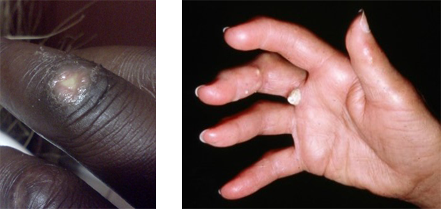
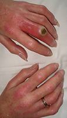

Module: Management of Raynaud’s Phenomenon, Finger Ulcers, Calcinosis, and Skin Involvement
Deborah McCloskey, RN, BSN; Janet L. Poole, PhD, OTR/L Cindy Mendelson, PhD, RN, and; Dinesh Khanna, MD, MS
Resources
Being prepared: Managing ulcers
This printout gives instructions for taking care of your digital ulcers.
Printout PDFFinger Ulcers
Why do people with scleroderma get finger ulcers?
Fingertip sores are most often caused by poor circulation to the fingertips. These sores can occur spontaneously from poor blood flow or after a cut, or injury to the skin.
Some of the pictures in this module are unpleasant, as they show pictures of ulcers and what can happen with infected ulcers. The purpose of having these pictures is to help you identify possible ulcers early, keep them from getting worse, decide if they are infected, and know when to call a doctor.
If the blood flow is severely reduced, a fingertip may remain a dusky bluish color for a long time. This is referred to as “ischemia.” If this is not treated quickly and blood flow is not restored, the finger tissue involved may die. This can lead to gangrene.
Ulcers can also occur over the knuckles. Hand swelling, skin thickening, and tightly stretched skin over the knuckles contribute to developing this type of finger ulcer. Ulcers can occur after banging your knuckle while doing everyday things.
Some patients with scleroderma develop calcinosis, small calcium deposits that can occur in the fingers. They start under the skin and feel firm. They can work their way to the surface and come through the skin as a stone or a pasty white material. An ulcer can develop over an area of calcinosis as it works its way to the surface and causes irritation, as well as stretching and thinning of the skin.
Finger ulcers are slow to heal, since the blood supply is reduced, fingers are swollen, or skin is stretched tight over the area. They can take weeks to months to heal. Fingertip ulcers are particularly painful. Hand function is impaired, as is your ability to perform all daily activities.
What should I do if I have a finger ulcer?
If you are taking medication to improve blood flow, make sure you are taking it as prescribed. The following recommendations for ulcer care are provided as general guidelines. You should always talk to your doctor for specific information about your ulcers.
- Proper care of the ulcer is vital to healing.
- Keep the ulcer clean and protected.
- Use a liquid antiseptic, such as Betadine® or Providine®, diluted in water. Apply two to three times per day. Ointments should be used sparingly and are sometimes discouraged, as they may soften and weaken the healthy tissue surrounding the ulcer. This may slow healing and may actually increase the size of the ulcer. If you do use an ointment, put only a small amount just on the ulcer.
- Keep the ulcer moist with agents such as Vaseline®.
- Keep the ulcer covered with a fabric bandage. Plastic band aids cause softening and breakdown of the healthy tissue around the ulcer and may result in worsening of the ulcer. Fabric bandages work best.
- Change the bandage every time it gets wet!
- Ulcers may develop a hard surface, or scab, that will make it difficult for the tissue edges to mend together. If this occurs, a chemical to soften the scab, such as Silvadene® cream, may be prescribed. It should be applied as directed.
- Proper care will minimize the risk of infection; however, even with the best care, infections can occur. Infections must be treated promptly with antibiotics.
Do I have an infected finger ulcer?

- You may have an infection if you have any of these symptoms:
- Redness around the sore or of the involved finger.
- Swelling around the sore or of the involved finger.
- Any drainage from the sore.
- An increase in pain.
- Warmth or heat in the area around the sore.
When should I call the doctor’s office?
You should call the doctor’s office:
- If your finger ulcers are worse:
- If you suspect the ulcer is infected.
- If new ulcers develop or existing ulcers get larger.
- If your Raynaud’s attacks are worse:
- If attacks become more frequent.
- If attacks become more severe, longer, or more painful.
- If fingertips remain discolored after a Raynaud’s attack is over.
- If your pain is worse:
- If ulcer pain is worsening.
- If swelling is worse and causing pressure.
- If a fingertip is persistently discolored and/or painful.
What can I do to prevent finger ulcers?
- The measures noted above to reduce the symptoms of Raynaud’s attacks will also help prevent finger ulcers.
- Take medications that may help blood flow.
- Take precautions to avoid excessive skin dryness and “cracks” in the skin:
- Lanolin-rich moisturizers are generally best.
- Avoid harsh soaps and detergents.
- Use soaps with moisturizers.
- Use gloves when using cleaning agents or washing dishes.
- Dry hands thoroughly after washing.
What are some of the medical treatments that my doctor might prescribe for ulcers?
- Antibiotics, if the ulcer is infected.
- Pain medication as needed, because pain can cause blood vessels to narrow.
- Currently, there are no medications approved by the Food and Drug Administration specifically for finger ulcers;
- Vasodilators, such as calcium channel blockers (nifedipine, amlodipine).
- Therapies approved for pulmonary arterial hypertension, such as phosphodiesterase-5 inhibitors (Viagra® and Cialis®) and prostacyclin analogs (Flolan® and Remodulin®). Viagra is now available as a generic and usually must be taken 3 times a day.
- Bosentan (Tracleer®) has been shown to prevent new finger ulcers in two large studies, but has not been approved in US.
- Botox injection in fingers by a hand surgeon has been effective in patients with resistant ulcers. Candidates for Botox and/or digital sympathectomy are people who have a history of Raynaud’s phenomenon or Raynaud’s disease with digital pain and ulcers/nonhealing wounds despite medical management. Botox may not be appropriate in the following situations:
- Botox should be avoided in patients who have an allergy/sensitivity to the toxin, or who are pregnant, breast-feeding, or have an active infection. Botox should also be used with caution in people who have myasthenia gravis or other neuromuscular disorders.
- Botox may not be effective in people with vasculitis or end-stage scleroderma as the vessels may be blocked due to fibrosis and calcifications, and may not be able to dilate in response to the medication.
- Botox may cause temporary hand weakness that will resolve, but may last up to 3 months.
- The duration of the effect of Botox is unknown, and repeat injections may be necessary.
- Patients with isolated digital occlusion may benefit from arterial bypass rather than Botox injection or sympathectomy.